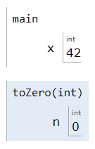
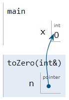

Reference Parameters
When you pass a variable to a function, the function receives a copy of the calling value or argument. Assigning to a parameter variable changes the parameter but has no effect on the argument. Consider this program, along with a function which attempts set a variable to zero:
void toZero(int n) { n = 0; }
int main()
{
int x = 42;
toZero(x);
cout << x << endl;
};
If you call the procedure the parameter variable named n is initialized with a copy of the value is stored in x (42 in this case). Making a copy of arguments when calling a function, is known as pass by value or call by value, and the parameter n is known as a value parameter.
The assignment statement n = 0; inside the function sets the parameter variable n to 0 but leaves the variable x unchanged in the main function.
Pass by Reference
If you want to change the value of the calling argument, you can change the parameter from a value parameter into a reference parameter by adding an ampersand between the type and the name in the function header, like this:
void toZero(int& n) { n = 0; }
Unlike value parameters, reference parameters are not copied. Instead, the function treats n as a reference to the original variable, which means that the memory used for that variable is shared between the function and its caller.
If you trace through the program by clicking the link, you'll see that this time, the variable x in main is set to 0, just as you intended.
 This course content is offered under a
CC
Attribution Non-Commercial license. Content in this course
can be considered under this license unless otherwise noted.
This course content is offered under a
CC
Attribution Non-Commercial license. Content in this course
can be considered under this license unless otherwise noted.